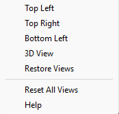

TMH SceneBuilder
W.T.Flanigan
M.Habib H.C.Flanigan
TMH Software
|
|
Menu Views
|
|
| |

Top Left:
By
selecting the Top Left option, the interface will transition to the
top-left control panel, providing you with full control over navigation
and movement within the Left Top Panel.
Top Right:
By
selecting the Top Right option, the interface will transition to the
top-right control panel, providing you with full control over
navigation
and movement within the Left Right Panel.
Bottom Left:
By
selecting the Bottom Left option, the interface will transition to the
bottom-left control panel, providing you with full control over
navigation
and movement within the Bottom Left Panel.
3D View:
By
selecting the 3D option, the interface will transition to the 3D
control panel, providing you with full
control over navigation
and movement within the 3D Panel.
Restore
Views
By selecting "Restore Views" you will set
Reset All
Views
If
you have changed the size of the main windows and would like to go
back, This option sets the 4 main screens to their default sizes
Additional
tips on how to use the directions:
By
selecting the 3D Panel from the View tab, you will obtain complete
control over the 3D panel situated at the bottom-right corner. This
allows you to navigate the environment freely from any angle using the
mouse (left and right click) in conjunction with the keyboard controls
— W, A, S, and D for directional movement, and E and Q for vertical
navigation. |
|
|
|
Copyright
© 2025. TMH
Software.
W.T.Flanigan
M.Habib H.C.Flanigan |
|
|